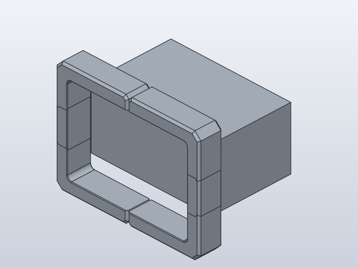
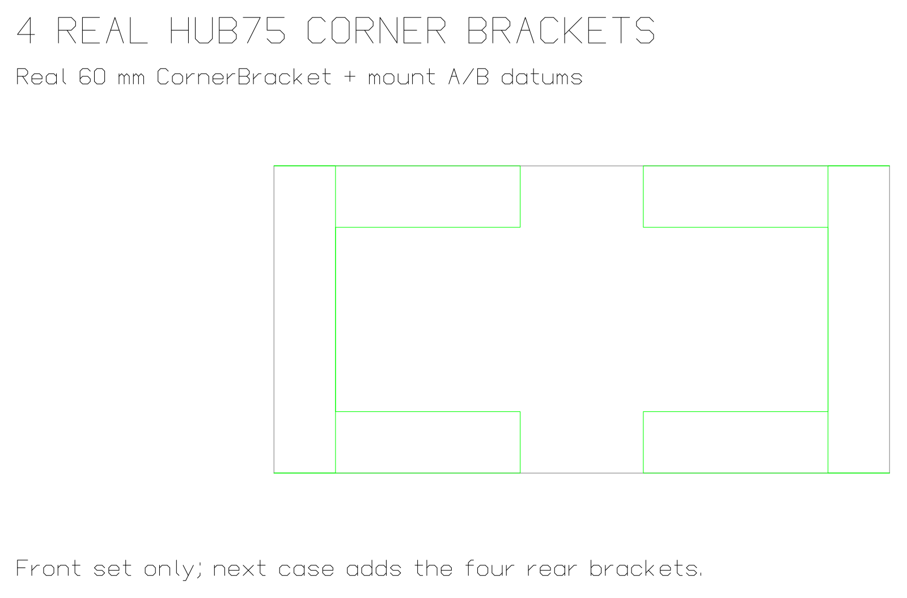
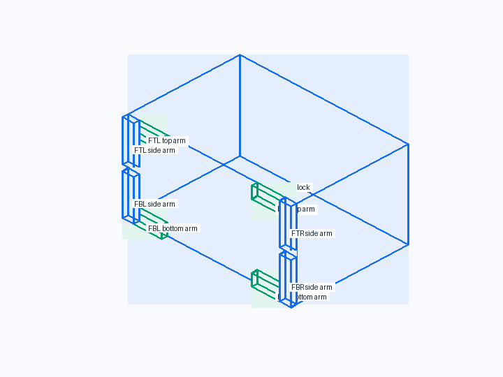
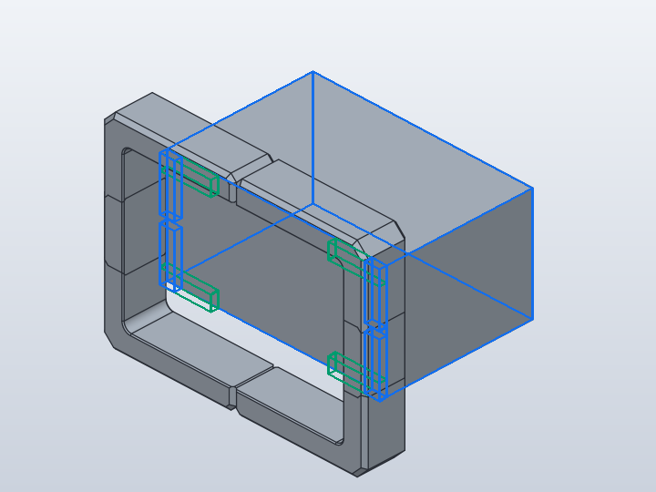
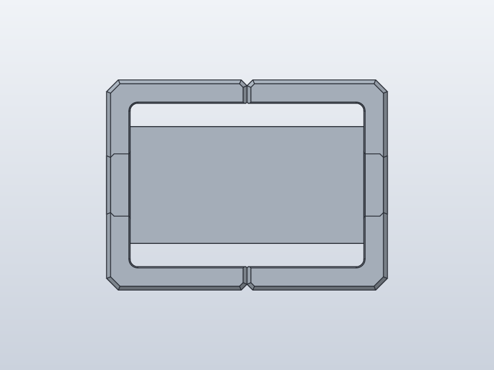
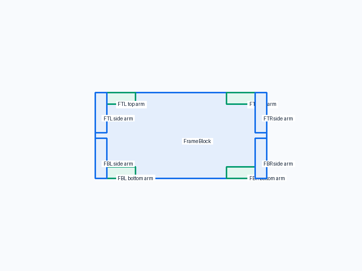
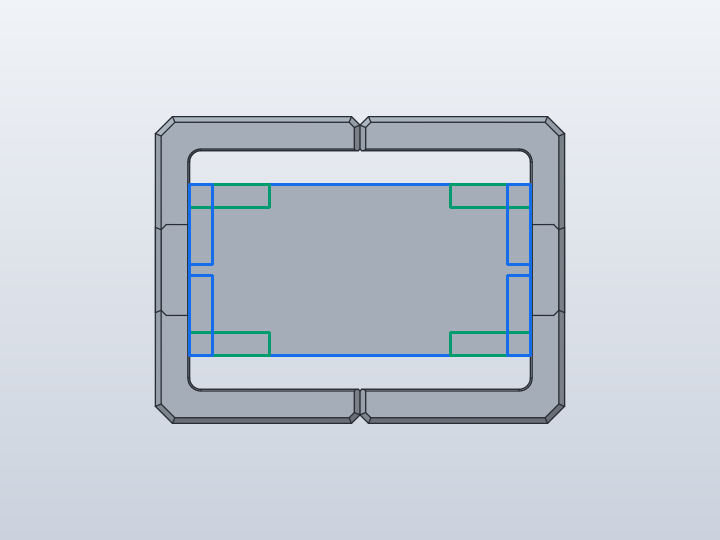
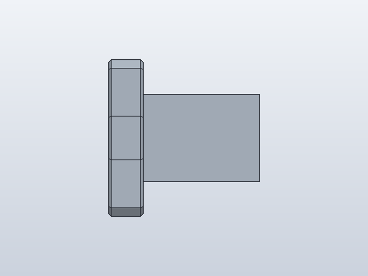
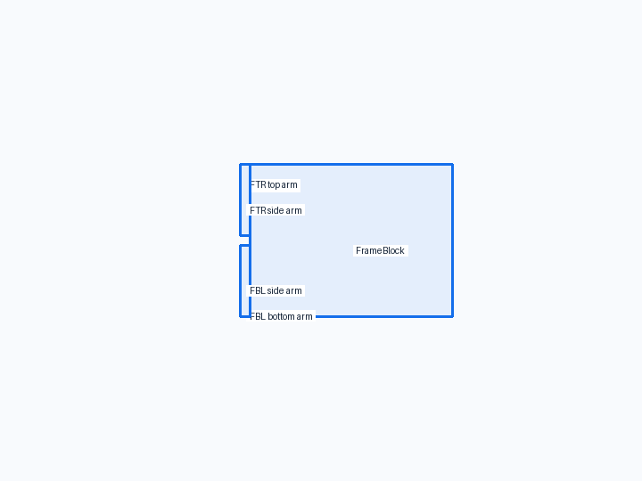
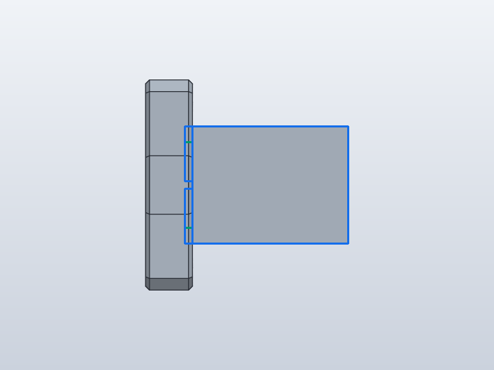

Forge qualification case
Four real HUB75 corner brackets

1. Test setup

Test goal
Use the real HUB75 CornerBracket profile and its real mount-A/mount-B datums on the four front corners. This is the first qualification step that mirrors the wooden display bracket assembly rather than a generic L-profile.
Pass criteria
The real 60 mm HUB75 brackets wrap the four front corners with their broad faces outside the cabinet front and their two arms following the adjacent frame edges.
Mutation criterion
Change frame_width, frame_depth and frame_height from 120x80x60 mm to 160x120x90 mm in the saved design; all four real brackets must follow the moved front corners without rerunning Python.
2. Implementation under test
Fixture source
"""Four real HUB75 CornerBracket occurrences on the front corners."""
class FrameBlock:
_width = 120.0
_depth = 80.0
_height = 60.0
def build(self):
return Box(self._width, self._depth, self._height)
class Hub75CornerBracket:
arm_width = 24.0
arm_height = 12.0
horizontal_arm_length = 60.0
vertical_arm_length = 60.0
outer_corner_chamfer = 6.0
arm_end_chamfer = 3.0
side_edge_chamfer = 2.0
elephant_foot_relief = 0.6
inside_corner_radius = 4.0
def build(self):
w = self.arm_height
h = self.horizontal_arm_length
v = self.vertical_arm_length
end = self.arm_end_chamfer
outer = self.outer_corner_chamfer
# Same neutral XZ profile used by the real HUB75 wood-frame model.
points = [
("i_corner", (0, 0)),
("o_hor_tip", (h, 0)),
("o_hor_bevel", (h, w - end)),
("o_hor", (h - end, w)),
("o_corner", (-w + outer, w)),
("o_vert", (-w, w - outer)),
("o_vert_bevel", (-w, -v + end)),
("o_vert_end", (-w + end, -v)),
("v_tip", (0, -v)),
]
body = Polygon2D(
points,
plane="XZ",
world=True,
).extrude(
self.arm_width,
direction=Direction.SYMMETRIC,
)
body = body.fillet(
self.inside_corner_radius,
edges=Edges.from_vertices("i_corner"),
)
body = body.chamfer(
self.elephant_foot_relief,
edges=Edges.from_vertices("o_hor_tip", "v_tip"),
)
body = body.chamfer(
self.side_edge_chamfer,
edges=Edges.from_profile("o_*", sides="both"),
)
body = body.chamfer(
self.elephant_foot_relief,
edges=Edges.from_profile("i_corner", sides="both"),
)
return body
class FourHub75CornerBrackets:
frame_width = 120.0
frame_depth = 80.0
frame_height = 60.0
def build(self):
frame = FrameBlock(
_width=self.frame_width,
_depth=self.frame_depth,
_height=self.frame_height,
)
bracket = Hub75CornerBracket()
# These are the same mount-A / mount-B datums used by the real
# HUB75 wood-frame assembly. The component remains placement-neutral.
w = Hub75CornerBracket.arm_height
front_mount_a = AnchorFrame(
origin=(0, 0, -w),
z=BACK,
x=DOWN,
)
front_mount_b = AnchorFrame(
origin=(w, 0, 0),
z=BACK,
x=DOWN,
)
# Positive gap moves the symmetric bracket to the outside of the
# FRONT face: its rear broad face lands exactly on the cabinet face.
gap = Hub75CornerBracket.arm_width / 2
top_left = bracket.copy().attach(
frame,
parent=Anchor.FRONT_TOP_LEFT,
child=front_mount_a,
gap=gap,
)
top_right = bracket.copy().attach(
frame,
parent=Anchor.FRONT_TOP_RIGHT,
child=front_mount_b,
gap=gap,
)
bottom_right = bracket.copy().attach(
frame,
parent=Anchor.FRONT_BOTTOM_RIGHT,
child=front_mount_a,
gap=gap,
)
bottom_left = bracket.copy().attach(
frame,
parent=Anchor.FRONT_BOTTOM_LEFT,
child=front_mount_b,
gap=gap,
)
return frame + top_left + top_right + bottom_right + bottom_left
FourHub75CornerBrackets()
Public Forge API used
Hub75CornerBracket + AnchorFrame mount_a/mount_b; attach(parent=FRONT corner, child=mount frame, gap=+arm_width/2)
Forge model represented by this fixture
One neutral real CornerBracket component plus four occurrences. The component owns only the reviewed XZ profile, fillet and chamfers; the assembly owns mount-A/mount-B, front normal, clocking and face offset.
3. Generated SolidCraft relationship
Four rigid native joints use topology-backed FRONT corners. Child AnchorFrames use BACK/DOWN and the joint gap moves the symmetric 24 mm bracket from its centre plane onto the front broad face.
Show generated relationship / command details
[
{
"command": "joint.create",
"params": {
"type": "rigid",
"name": "Attach Hub75CornerBracket:1 to FrameBlock:1",
"a": {
"occurrence": "FrameBlock:1",
"edge": [
-60.0,
-40.0,
30.0
],
"on": [
0.0,
-40.0,
30.0
],
"corner": [
-60.0,
-40.0,
60.0
]
},
"b": {
"occurrence": "Hub75CornerBracket:1",
"point": [
-60.0,
-40.0,
60.0
],
"z": [
0.0,
1.0,
0.0
],
"x": [
0.0,
0.0,
-1.0
]
},
"offset": 12.0,
"angle": 0.0
}
},
{
"command": "joint.create",
"params": {
"type": "rigid",
"name": "Attach Hub75CornerBracket:2 to FrameBlock:1",
"a": {
"occurrence": "FrameBlock:1",
"edge": [
60.0,
-40.0,
30.0
],
"on": [
0.0,
-40.0,
30.0
],
"corner": [
60.0,
-40.0,
60.0
]
},
"b": {
"occurrence": "Hub75CornerBracket:2",
"point": [
60.0,
-40.0,
60.0
],
"z": [
0.0,
1.0,
0.0
],
"x": [
0.0,
0.0,
-1.0
]
},
"offset": 12.0,
"angle": 0.0
}
},
{
"command": "joint.create",
"params": {
"type": "rigid",
"name": "Attach Hub75CornerBracket:3 to FrameBlock:1",
"a": {
"occurrence": "FrameBlock:1",
"edge": [
60.0,
-40.0,
30.0
],
"on": [
0.0,
-40.0,
30.0
],
"corner": [
60.0,
-40.0,
0.0
]
},
"b": {
"occurrence": "Hub75CornerBracket:3",
"point": [
60.0,
-40.0,
0.0
],
"z": [
0.0,
1.0,
0.0
],
"x": [
0.0,
0.0,
-1.0
]
},
"offset": 12.0,
"angle": 0.0
}
},
{
"command": "joint.create",
"params": {
"type": "rigid",
"name": "Attach Hub75CornerBracket:4 to FrameBlock:1",
"a": {
"occurrence": "FrameBlock:1",
"edge": [
-60.0,
-40.0,
30.0
],
"on": [
0.0,
-40.0,
30.0
],
"corner": [
-60.0,
-40.0,
0.0
]
},
"b": {
"occurrence": "Hub75CornerBracket:4",
"point": [
-60.0,
-40.0,
0.0
],
"z": [
0.0,
1.0,
0.0
],
"x": [
0.0,
0.0,
-1.0
]
},
"offset": 12.0,
"angle": 0.0
}
}
]4. Machine verification
size 160x120x90 · 5 bodies · measurements-size-160x120x90.json
Parameters
| Name | Value |
|---|---|
frame_width | 160.0 |
frame_depth | 120.0 |
frame_height | 90.0 |
Hub75CornerBracket_arm_width | 24.0 |
Hub75CornerBracket_horizontal_arm_length | 60.0 |
Hub75CornerBracket_arm_height | 12.0 |
Hub75CornerBracket_arm_end_chamfer | 3.0 |
Hub75CornerBracket_outer_corner_chamfer | 6.0 |
Hub75CornerBracket_vertical_arm_length | 60.0 |
Hub75CornerBracket_inside_corner_radius | 4.0 |
Hub75CornerBracket_elephant_foot_relief | 0.6 |
Hub75CornerBracket_side_edge_chamfer | 2.0 |
Bodies
| Body | BBox min | BBox max |
|---|---|---|
| FrameBlock | [-80, -60, 0] | [80, 60, 90] |
| Hub75CornerBracket | [-92, -84, 42] | [-20, -60, 114] |
| Hub75CornerBracket (Hub75CornerBracket:2) | [20, -84, 42] | [92, -60, 114] |
| Hub75CornerBracket (Hub75CornerBracket:3) | [20, -84, -24] | [92, -60, 48] |
| Hub75CornerBracket (Hub75CornerBracket:4) | [-92, -84, -24] | [-20, -60, 48] |
Baseline · 5 bodies · measurements.json
Parameters
| Name | Value |
|---|---|
frame_width | 120.0 |
frame_depth | 80.0 |
frame_height | 60.0 |
Hub75CornerBracket_arm_width | 24.0 |
Hub75CornerBracket_horizontal_arm_length | 60.0 |
Hub75CornerBracket_arm_height | 12.0 |
Hub75CornerBracket_arm_end_chamfer | 3.0 |
Hub75CornerBracket_outer_corner_chamfer | 6.0 |
Hub75CornerBracket_vertical_arm_length | 60.0 |
Hub75CornerBracket_inside_corner_radius | 4.0 |
Hub75CornerBracket_elephant_foot_relief | 0.6 |
Hub75CornerBracket_side_edge_chamfer | 2.0 |
Bodies
| Body | BBox min | BBox max |
|---|---|---|
| FrameBlock | [-60, -40, 0] | [60, 40, 60] |
| Hub75CornerBracket | [-72, -64, 12] | [8.88178e-16, -40, 84] |
| Hub75CornerBracket (Hub75CornerBracket:2) | [-3.33067e-15, -64, 12] | [72, -40, 84] |
| Hub75CornerBracket (Hub75CornerBracket:3) | [-8.88178e-16, -64, -24] | [72, -40, 48] |
| Hub75CornerBracket (Hub75CornerBracket:4) | [-72, -64, -24] | [3.33067e-15, -40, 48] |
Semantic validation
| Status | Level | Check | Expected | Actual |
|---|---|---|---|---|
| PASS | Q4 | declared target geometry | [{"label": "FrameBlock", "min": [-60, -40, 0], "max": [60, 40, 60]}, {"label": "front top-left", "min": [-72, -64, 12], "max": [0, -40, 84]}, {"label": "front top-right", "min": [0, -64, 12], "max": [72, -40, 84]}, {"label": "front bottom-right", "min": [0, -64, -24], "max": [72, -40, 48]}, {"label": "front bottom-left", "min": [-72, -64, -24], "max": [0, -40, 48]}] | [{"min": [-60.0, -40.0, 0.0], "max": [60.0, 40.0, 60.0]}, {"min": [-72.0, -64.00000000000001, 11.999999999999996], "max": [8.881784197001252e-16, -39.999999999999986, 84.0]}, {"min": [-3.3306690738754696e-15, -64.00000000000003, 12.0], "max": [72.0, -39.999999999999986, 84.0]}, {"min": [-8.881784197001252e-16, -64.00000000000001, -24.0], "max": [72.0, -39.999999999999986, 48.0]}, {"min": [-72.0, -64.00000000000001, -24.0], "max": [3.3306690738754696e-15, -39.999999999999986, 48.0]}] |
| PASS | Q4 | five bodies: frame plus four real HUB75 brackets | 5 | 5 |
| PASS | Q5 | declared mutation target geometry | [{"label": "FrameBlock", "min": [-80, -60, 0], "max": [80, 60, 90]}, {"label": "front top-left", "min": [-92, -84, 42], "max": [-20, -60, 114]}, {"label": "front top-right", "min": [20, -84, 42], "max": [92, -60, 114]}, {"label": "front bottom-right", "min": [20, -84, -24], "max": [92, -60, 48]}, {"label": "front bottom-left", "min": [-92, -84, -24], "max": [-20, -60, 48]}] | [{"min": [-80.0, -60.0, 0.0], "max": [80.0, 60.0, 90.0]}, {"min": [-92.0, -84.00000000000003, 42.0], "max": [-20.0, -59.99999999999998, 114.0]}, {"min": [19.999999999999996, -84.00000000000001, 42.0], "max": [92.0, -59.999999999999986, 114.0]}, {"min": [20.0, -84.00000000000003, -24.0], "max": [92.0, -59.999999999999986, 48.0]}, {"min": [-92.0, -84.00000000000004, -24.0], "max": [-19.999999999999996, -59.999999999999986, 48.0]}] |
| PASS | Q5 | five bodies after saved-design mutation | 5 | 5 |
5. Visual verification
Iso
Current SolidCraft iso view

Expected geometry in the same iso view

Expected geometry over the actual iso view
Additional front/right views
Front

Current SolidCraft front view

Expected geometry in the same front view

Expected geometry over the actual front view
Right

Current SolidCraft right view

Expected geometry in the same right view

Expected geometry over the actual right view
6. Evidence and references
Raw evidence
Show generated files and measurements
- Fixture source
- Generated command JSON
- results.json
- measurements-size-160x120x90.json
- measurements.json
- joint-inspect.json
- model-size-160x120x90.sc
- model.sc
- model.step
- qualification-result.json
- validation.json
- visual-validation.json
- camera-front.json
- camera-iso.json
- camera-right.json
- Native snapshot: model.png
- Native snapshot: model-front.png
- Native snapshot: goal-front.png
- Native snapshot: overlay-front.png
- Native snapshot: visual-diff-front.png
- Native snapshot: model-right.png
- Native snapshot: goal-right.png
- Native snapshot: overlay-right.png
- Native snapshot: visual-diff-right.png
- Native snapshot: model-iso.png
- Native snapshot: goal-iso.png
- Native snapshot: overlay-iso.png
- Native snapshot: visual-diff-iso.png


Reference models
These comparisons clarify concepts; Forge does not promise API compatibility with them.
- SolidCraft: The qualification uses the same mount-A/mount-B datum strategy as the real HUB75 CornerBrackets assembly.
- BOSL2: The component remains placement-neutral; the assembly supplies the local attachment frame.